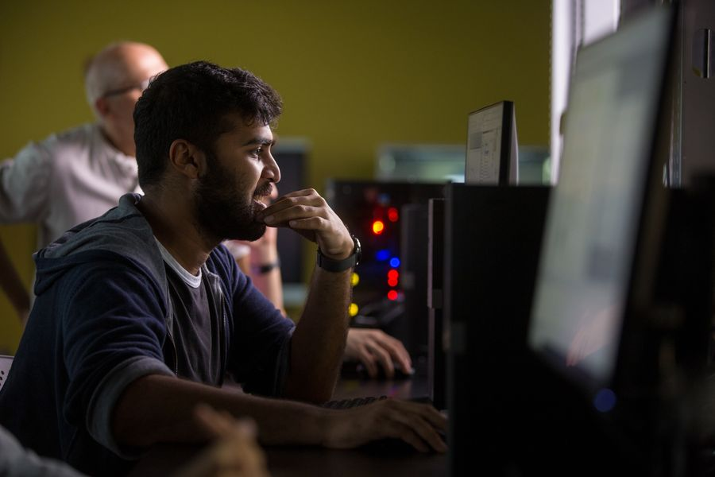
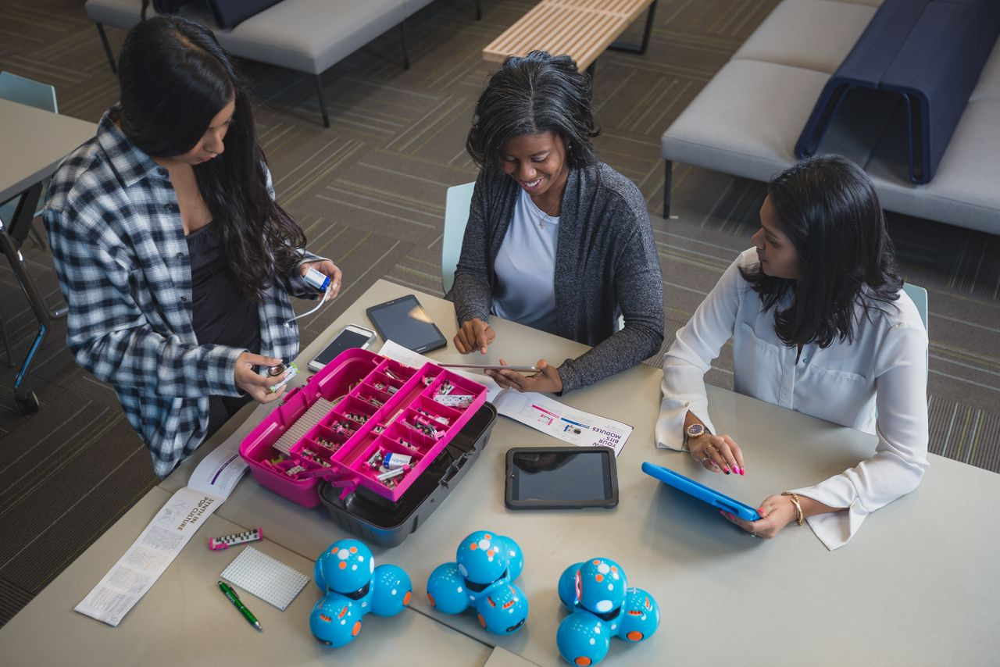
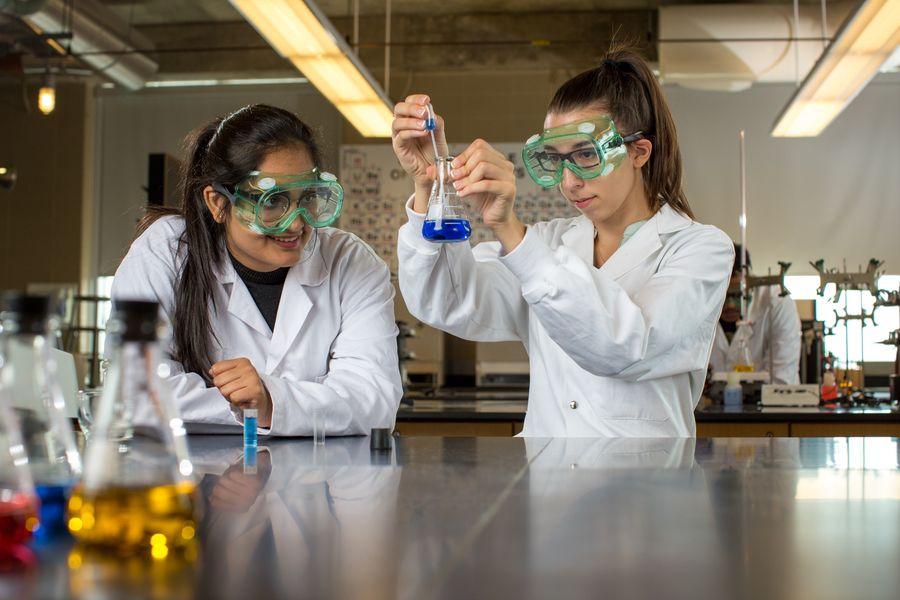
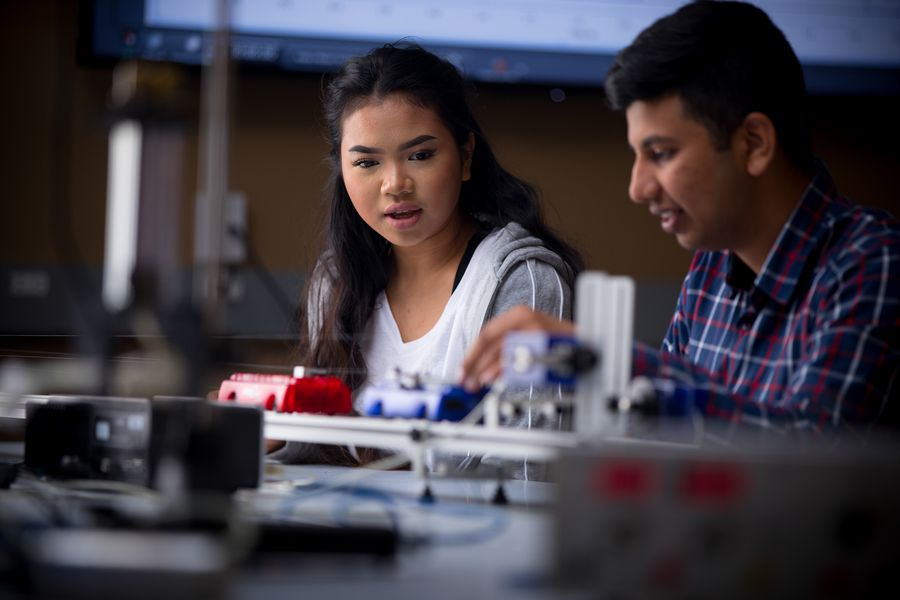
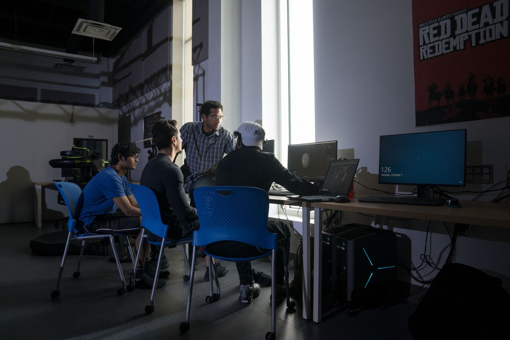
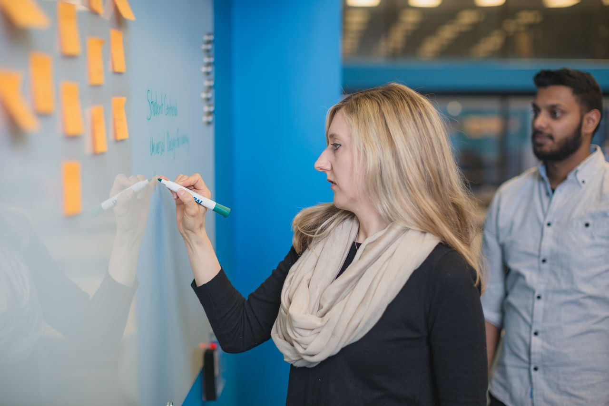

Teaching in the age of AI
Generative tools are already in our students' hands and in our own. What does that change about how we set work, assess it, and talk about academic integrity — and where does it genuinely help?
Faculty of Science · Ontario Tech University
A day for the people who teach science here to compare notes on how they do it — what is working in our classrooms and labs, and what is not.
About the symposium
We spend a great deal of time on what we teach and comparatively little talking to each other about how. This is the day we set aside for that conversation.
The symposium brings together tenure-track, teaching-focused and contract instructors, along with teaching assistants, from across the Faculty of Science. The focus is our own undergraduate teaching — the lectures, labs, tutorials and assessments our students actually meet.
It is an informal event. There is no registration fee, no external audience to perform for, and no expectation that anyone arrives with polished results. Past iterations have drawn thirty to forty colleagues, and it runs every other year.

Themes Draft
Three directions the committee is considering. Sessions will not be limited to them — they are a starting point, not a boundary.

Generative tools are already in our students' hands and in our own. What does that change about how we set work, assess it, and talk about academic integrity — and where does it genuinely help?

Getting and keeping attention in large first-year courses, in labs, and in the quiet rooms where nobody wants to answer. What has actually moved the needle in your teaching?

Simulations, response systems, data tools, remote and hybrid delivery. Which of these earn their place, which quietly add work, and what have we learned the hard way?

The day Draft
Schedule Illustrative only
Sketched to show the shape of the thing. Times, length and running order are all open.
Keynote To be announced
The committee is drawing up a shortlist. We are weighing a single keynote against a panel of colleagues, and a voice from inside the Faculty against one from outside it.
Have someone in mind? Suggestions from across the Faculty are welcome, and the earlier the better — good speakers book up months ahead.

Take part
You do not need a finished study or a tidy result. A technique you have been trying, an assessment that worked better than expected, a tool you have strong opinions about, or something that failed and taught you why — all of it is worth five minutes of the room's attention.
The committee is still deciding whether to run a formal call or simply invite contributions. Either way, details and a deadline will appear here.
There is no fee. When the date is fixed we will circulate a registration form through the Faculty and post the link here. Numbers matter mainly so we order the right amount of coffee.
Who is organizing this
A volunteer committee of colleagues from the Faculty of Science. If you would like to help with any part of the day, say so — there is plenty to go round.